Como llenar el Formato de Ingresos Mensuales
Tal como mencionamos en la sección de Políticas del área de Administración,
la Constitución y leyes de cualquier país del mundo nos exigen llevar
nuestra contabilidad al día de una forma clara y precisa, y para esto
es necesario que todos los niveles de la estructura reporten en un lapso no mayor a 15 días después de haber terminado el mes, su relación de ingresos y egresos.
Para eso la Dirección Nacional de Administración, ha dispuesto una
serie de formatos, los cuales están contemplados en este sistema.
Estos reportes deben ser entregados y supervisados por los diferentes niveles de la estructura de la siguiente forma:
• Los GRUPOS deben entregarlos a los DISTRITOS
• Los informes tanto de los GRUPOS como del DISTRITO a las REGIONES
• Los informes de los GRUPOS , DISTRITOS y REGION al CENTRO DE SERVICO SCOUT NACIONAL (CSSN)
Por esto se ha
determinado que todos los archivos de los grupos y distritos, debe
estar guardados en espacios compartidos a través de la Internet, para que de esta forma en nivel supervisor pueda hacer seguimiento y apoyar en caso necesario.
Esta condición se debe a que la Asociación de Scouts de Venezuela posee
una sola personalidad jurídica con domicilio legal en la ciudad de
Caracas según reza en el registro mercantil.
Estos formatos fueron diseñados de una forma muy simple y con los
requisitos mínimos para poder contabilizarlos, pueden ser utilizados
por cualquier nivel de la estructura y no deben ser modificados.
• • •
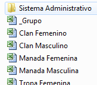
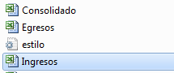Lo primero que debemos hacer es entrar en la carpeta de Dropbox de nuestro Grupo, Distrito o Región, allí donde mismo Trabajamos con el TURCO, y hacer doble clic sobre la carpeta Sistema Administrativo.
Luego esta se abrirá y nos permitirá ver todos los archivos del mismo. Allí debemos hacer doble clic sobre el archivo Ingresos.xls
Importante: Es necesario que tengamos instalado MS Excel en nuestra computadora, para que todos los archivos del Sistema funcionen adecuadamente.
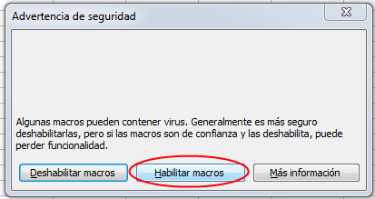
Al abrir nuestro archivo Ingresos.xls, este nos pedirá que confirmemos la ejecución de los Macros necesarios para que funciones el sistema.
Debemos pulsar donde dice Habilitar Macros.
Nota: Es
posible que no aparezca este mensaje, si la configuración de Excel está
ajustada para permitir todas las Macros, en este caso no hay ningún
problema.
Finalmente aparecerá una ventana advirtiendo que el archivo o libro,
está vinculado a otros archivos, lo cual es necesario para que funcione
el sistema.
En este caso debemos pulsar sobre el botón Actualizar, tal como lo muestra la imagen.

Datos Generales
Estos datos se llenarán automáticamente con lo que se escriba en el formato “CONSOLIDADO ADMINISTRATIVO”, contenido en el sistema, lo cual evita volver a escribir lo mismo.
Por tratarse de una relación MENSUAL, las celdas EVENTO, LUGAR, FECHA y CUOTA quedan en blanco.
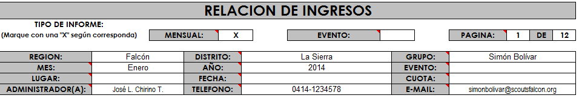
Asiento de los Ingresos
Este formato cuenta con varias filas en las cuales se deben reportar
cada uno de los INGRESOS, y cuenta con las siguientes columnas:
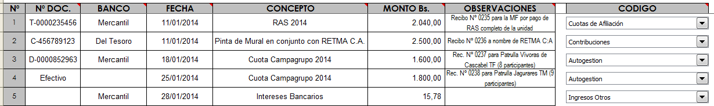
A continuación se explica detalladamente cada una de estas columnas
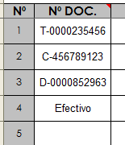Nº DOC. Aquí debe colocar la información del documento que respalda el Igreso:
1 Deposito: D-“Numero del Deposito”
2 Cheque: C-“Numero de Cheque”
3 Transferencia: T-“Numero de Transferencia”
4 Efectivo: Efectivo
Es muy recomendable que cada movimiento se respalde con un recibo de Ingreso, cuyo número se
deberá asentar en la columna OBSERVACIONES. Esto es más recomendable aún, si no se posee una cuenta para manejar los fondos.
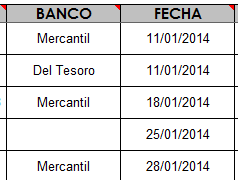
BANCO Coloque el nombre del Banco en donde se realizo el depósito o transferencia; o de donde se emitió en cheque.
En el caso de montos en efectivo, dejar el espacio en blanco.
FECHA Coloque en orden cronológico (empezando por la fecha
más antigua hasta la fecha más reciente) el día, mes y año en que fue
realizado el ingreso.
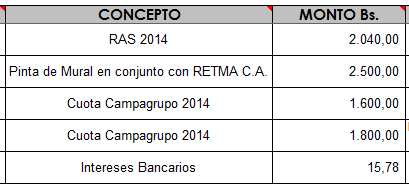
CONCEPTO : Explique
brevemente el origen del ingreso, por ejemplo: RAS 2014, Pinta de Mural
en conjunto con RETMA C.A., Cuota Campagrupo 2014, Intereses Bancarios, etc.
MONTO Bs. Coloque el monto en bolívares (Bs.) incluyendo dos céntimos.
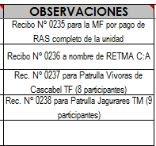
OBSERVACIONES Coloque aquí información adicional que ayude a la conciliación de las cuentas de manera más rápida y eficiente, por ejemplo:
- Recibo
Nº 0235 para la MF por pago de RAS completo de la
unidad
- Recibo
Nº 0236 a nombre de RETMA C:A
- Rec.
Nº 0237 para Patrulla Vívoras de Cascabel TF (8
participantes)
- Rec.
Nº 0238 para Patrulla Jagurares TM (9 participantes)
Nota: Para todos lo depósitos es obligatorio
colocar en Observaciones el Nombre y Apellido si es persona natural, o
la razón social de la persona jurídica que beneficia el mismo.
Código: Partida Contable
Estos son los tipos de egresos que intervienen en un registro y
que forman parte de los estados financieros. Para seleccionarlos
simplemente debes pulsar sobre la lista desplegable.
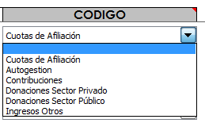
Cuotas de Afiliación = En
nuestro caso se refieren a los pagos de los miembros del Grupo,
que iran destinados al Registro Anual Scout (RAS). Los
afiliados tienen derecho a ser considerados miembros activos de nuestra
Asociación, luego de suplir los datos necesarios y abonar la cuota de
dinero establecida. Quedando entendido que todos debemos respetar las
normas de nuestra organización.
Autogestión
= Corresponde a todos las entradas que deriven de las actividades
propias de la organización, como: eventos profondos, remanente de
eventos y actividades, ventas de productos o servicios, etc. Por
ejemplo: lo vendido en una feria de comidas; el remanente de un
campamento de tropa..
Contribuciones =
Son todos aquellos fondos o aportes hechos a la organización por
personas particulares, empresas u organizaciones, como parte de un
proyecto o actividad, donde ambas partes se beneficien. Por ejemplo:
Una empresa aporta dinero para comprar plantas, que luego los Scouts y
el personal de esa empresa utilizarán en una campaña de arborización en
conjunto.
Donaciones = Fondos recibidos para el beneficio de la organización. Se diferencia de las contribuciones, por que el donante no reciba ninguna contraprestación de nuestra parte..
- Sector Privado: Son
todas aquellas personas naturales o jurídicas que no forman parte del
Estado. Ejemplo: Sr. Pedro Pérez, CACOINPAR, Supermercado Lau.
- Sector Público: Son
todos los entes que forman parte o pertenecen al Estado. Ejemplo:
Gobernación de Estado; Alcaldías y Consejos Municipales; Institutos
Nacionales, Estadales o Municipales, PDVSA.
Ingresos Otros = Corresponde a cualquier ingreso que no esté contemplado en los casos anteriores.
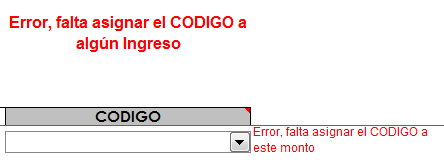IMPORTANTE
Si se introduce un monto cualquiera; pero no se le asigna un CODIGO, aparecerán 2 señales de advertencia.
La
primera en la parte superior de la columna donde están ubicados los
CODIGOS, y la segunda en la fila específica donde falte asignar el
mencionado.
Esto para evitar errores contables, entre el control de Ingresos y el Consolidado Administrativo
Como Reportar
El Sistema permite un monitoreo constante del avance de la gestión
administrativa, por parte del supervisor inmediato; pero esto no es
suficiente para cumplir con las leyes de la República en este sentido.
 En
vista de los antes expuesto, para completar cada hoja de reporte agrupe
las copias de los cheques emitidos, bauches de retiro o depósitos,
comprobantes de las transferencias realizadas, facturas y recibos; y
engrápelos en la parte posterior.
En
vista de los antes expuesto, para completar cada hoja de reporte agrupe
las copias de los cheques emitidos, bauches de retiro o depósitos,
comprobantes de las transferencias realizadas, facturas y recibos; y
engrápelos en la parte posterior.
Recuerde que máximo deben
ser en grupos de treinta (30) para facilitar el trabajo de verificación
por parte de la Dirección Nacional de Administración.
Es necesario que cada administrador conserve una copia de lo que está entregando.
Estos formatos con las copias deben ser utilizados y presentados
debidamente firmados y sellados, en los informes de Gestión de cada uno
de los entes, llámese Grupos, Distritos o Regiones.
Ayudas
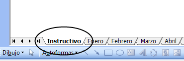
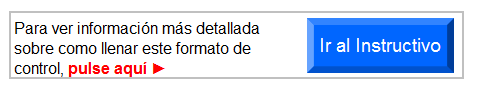Para
acceder a este Instructivo, busca la pestaña Instructivo en la parte
inferior del libro (junto a la de los meses), y luego pulsa sobre el
botón Ir al Instructivo, que aparece en esa hoja.